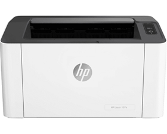
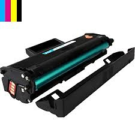
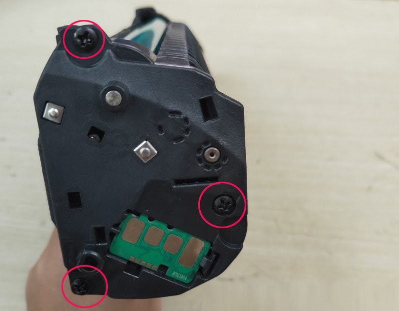

Nạp mực máy in Hp laser 107A / 107W : "Tận Nơi - Giá Rẻ"
Công ty Tin Học Hi-Tech chuyên: nạp mực máy in tận nơi TPHCM, Bơm mực in hp 107 tại nhà uy tín - tới nhanh - giá rẻ nhất Tphcm. Nhân nạp mực các loại Hp - Canon - Samsung - Brother - Ricoh - Epson ...
Bơm mực máy in Hp laser 107a/w tận nơi, giá rẻ .

Cấu hình máy in Hp laser 107a/ hp 107w
- Mã máy: Máy in Hp laser 107A (4ZB77A)
- Máy in laser trắng đen khổ A4.
- Tốc độ 20 PPM
- Bộ nhớ: 64 MHz
- Độ phân giải 1200 x 1200 dpi
- hộp mực in : Hp 107A black - W1107A
- Giá bơm mực hp 107w : khoản 80 - 100k
Máy in Hp Laser 107A với thiết kế nhỏ gọn, màu trắng đen. thích hợp đặt trong văn phòng làm việc, gia đình ... vận hành êm ái
Hộp mực in Hp laser 107W : dể dàng lắp ráp, thay thế. Vận hành êm ái. bản in lên đến 1000 Trang. Giá nạp mực máy in quận 3 chỉ 80-100k.

Trung tâm mực in Hi-Tech: nhận bơm mực máy in Hp 107a tại tất cả các quận huyện TPHCM. Nạp mực in các loại Hp - Canon - Samsung - Brother - Panasonic - Ricoh ... Dịch vụ thay mực in tận nơi giá rẻ.
Khi có nhu cầu cần bơm mực máy in hp 10a vui lòng liên hệ : 089 886 9964 hoặc nhắn tin Zalo : 0934 39 35 50 . Kỹ thuật viên sẻ đến ngay chỉ 20' .
cửa hàng bơm mực máy in hp 107w tận nơi - Giá rẻ. Có bảo hành Uy tín.
Bảng giá bơm mực in hp 107a/w
Hướng Dẫn Cách Nạp Mực Máy In HP 107A
Trước khi tiến hành nạp mực cho máy in Hp M107a , Các bạn phải lựa chọn loại b loại mực tốt để hạng chế hư hại về sau.
Dấu hiệu nhận biết máy in hp 107a hết mực: Với những hộp mực máy in hp 107a khi dùng lần đầu có dấu hiệu nhận biết rõ nhất là - Biểu tượng mực trên máy in nhấp nháy màu đỏ, Hoặc trên bản in có một đường sọc trắng từ trên xuống dưới và không có chữ. Lúc này chúng ta tiến hành nạp mực lại cho máy in hp m107w
Dưới đây Tin Học Hi-Tech xin chia sẻ cách nạp mực máy in hp m107w, Cũng như Cách bơm mực cho máy in HP MFP M135w . Một cách chi tiết, dể dàng nhất
Chuẩn bị trước khi bơm mực HP 107A
- Kềm bấm
- Tua vít 2 cạnh và 4 cạnh để tháo ốc.
- Trải giấy báo cho sạch sẻ
- Hộp đựng ốc vít, lò xo được tháo ra từ hộp mực để tránh thất lạc.
- Khăn giấy để vệ sinh
- Phểu đổ mực
- Phễu để đổ mực in ( nếu có ).
- 1 chổi sơn ( nếu có ).
Lưu ý khi nạp mực in HP 107A cho máy
- Mực in phù hợp với mỗi dòng máy - Nên chọn mua hộp mực hp 107A loại tốt
Mực nạp Hp có nhiều loại - Tuy nhiên HP 107A sử dụng mực riêng biệt của nó, không thể dùng chung với các loại mực HP khác. Các dòng máy dùng chung loại mực hp 107A như: dòng máy in HP Laser 107a, 107w, 135a, 135w, 137fnw
Cách nạp mực in HP 107A
Bước 1: mở nắp hộp mực

- Với hộp mực có ốc : các bạn mở 3 con ốc như trên hình rồi mở nắp ra nhé.
- Với hộp mực hp 107a rin , đi theo máy sẻ không có ốc. Lúc này ta dùng vật gì dẹp, giống như dao thái lan... Tách 3 vị trí ngay chổ ốc ra. sau đó nhẹ nhàng mử nắp ra nhé
- Sau khi mở được nắp ra. Phía dưới, sau lưng con chip sẻ có một nắp màu đen, đó chính là nơi đổ mực vào.
Bước 2: vệ sinh linh kiện, lấy hết mực thừa, mực cặn và mực thải
Sau khi mở nắp, tách hộp mực ra, bạn sẽ thấy mực thải rơi rớt bên trong. Chuẩn bị giấy báo lót từ đầu sẽ không làm vương vãi ra khắp nơi, tránh tình trạng vấy bẩn. Phần bên tay trái là hộp mực thải, tay phải là hộp mực bạn sẽ nạp mực in HP 107A vào đó.
Bạn nên sử dụng máy hút mực chuyên dụng để hút hết mực còn thừa trong hộp mực cũ. Sau đó, dùng bông hoặc vải mềm lau chùi, vệ sinh sạch sẽ.
Với hộp mực thải, sau khi tháo ngàm ra khỏi hộp mực, dùng tua vít tháo phần gạt mực ra khỏi. Sau đó bạn sẽ thấy phần mực thải bên trong. Dùng máy để hút hết phần mực thải ra ngoài.
Bước 3: nạp mực in HP 107A mới vào hộp mực
Sau khi vệ sinh sạch sẽ các linh kiện bên trong hộp mực, đảm bảo đã sạch mực thải, mực cũ và cặn mực trên thanh drum lẫn gạt thiếc, bạn tiến hành đổ mực tại vị trí như hình.
Sau khi đổ mực xong, đậy nắp lại, nhớ dùng máy hút hoặc lau sạch mực còn rơi vãi bên ngoài hộp mực. Tiếp theo đó, gắn các linh kiện và ốc vào lại như ban đầu và đặt hộp mực vào máy.
Bước 4: In test để kiểm tra chất lượng bản in sau khi nạp mực mới.
Hy vọng rằng với những hướng dẫn cách nạp mực in HP 107A bên trên của DTEX, các bạn sẽ thực hiện thành công khi tự nạp mực tại nhà
Công Ty Chuyên bơm mực máy in - Sửa chữa máy in tận nơi
Với kinh nghiệm hơn 10 năm trong lĩnh vực bơm mực máy in màu hp , sửa chữa máy in tận nơi uy tín, Hi-Tech luôn cam kết có mặt nhanh nhất tại Tphcm, Đội ngũ kỹ thuật viên đông đảo, luôn túc trực tại các quận huyện Tphcm
Trường hợp, bạn không chuyên các thao tác thay mực nên liên hệ dịch vụ nạp mực tận nơi hoặc bạn có thể mang trực tiếp hộp mực đến đơn vị cung cấp dịch vụ. Ngày nay, rất nhiều khách hàng doanh nghiệp và cá nhân đã sử dụng dịch vụ nạp mực in tại nhà vì sự tiện lợi, nhanh chóng, chuyên nghiệp của kỹ thuật viên.
Quý khách cần hỗ trợ về vấn đề mực in - máy in có thể liên hệ Cty Tin Học Hi-Tech : Tel: 089 886 8864 - Zalo: 0934 393 550. Ngoài dịch vụ bơm mực máy in hp m107A , Hi-Tech còn nhận sửa máy tính, sửa máy in tại quận 10, quận 11, quận tân bình, quận tân phú, quận phú nhuận, quận bình thạnh, quận 1, quận 3, quận 5, quận 6, quận 8, quận bình tân ...
Xem thêm
- Nạp Mực Máy In Hp 48A: HP Pro M15a, M16a, MFP M28a, M28w, M29a.
- Sửa lỗi máy in hay bị kẹt giấy ▷▷ Những lỗi hay gặp NHẤT
CÔNG TY TNHH TMDV TIN HỌC HI-TECH
Địa chỉ: 80/1/5 Duy Tân, Phường 15, Quận Phú Nhuận
website: http://www.tinhocht.com/
Cửa hàng nạp mực Quận 10: 77 Cửu Long, Phường 15, Quận 10
CN Nạp mực Quận 1: TK 12/21 Bến Chương Dương, P. Cầu Kho, Quận 1
CN Nạp mực Tan Phú: 64 Lương Trúc Đàm, Quận Tân Phú
CN Nạp mực in quận 11 : 64 Bình Thới, Quận 11
CN Nạp mực in quận 3 : Hẽm 164 Võ Thị Sáu, Quận 3
CN Nạp mực in Tân Bình : 1/19 Hồng Lạc, Quận tân bình